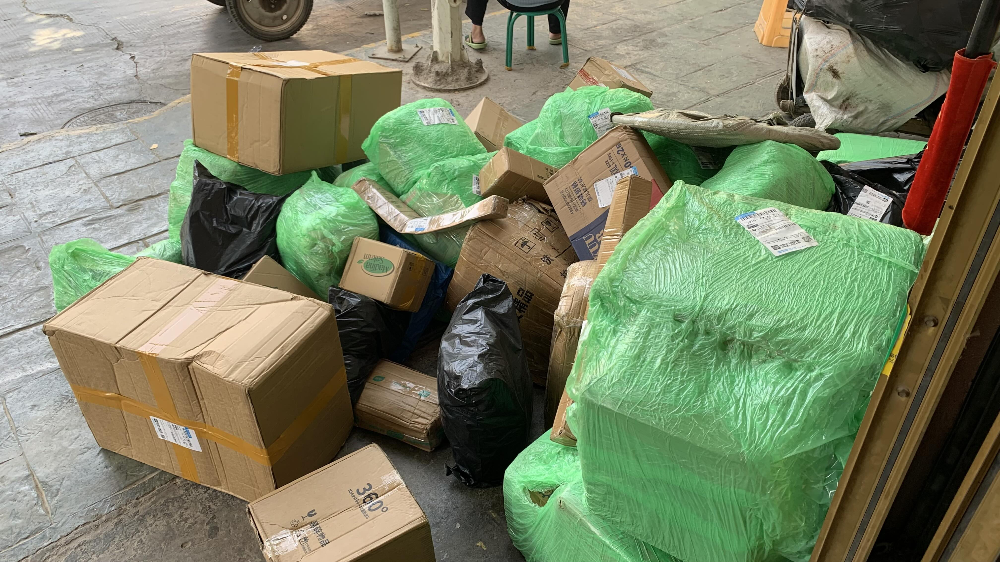
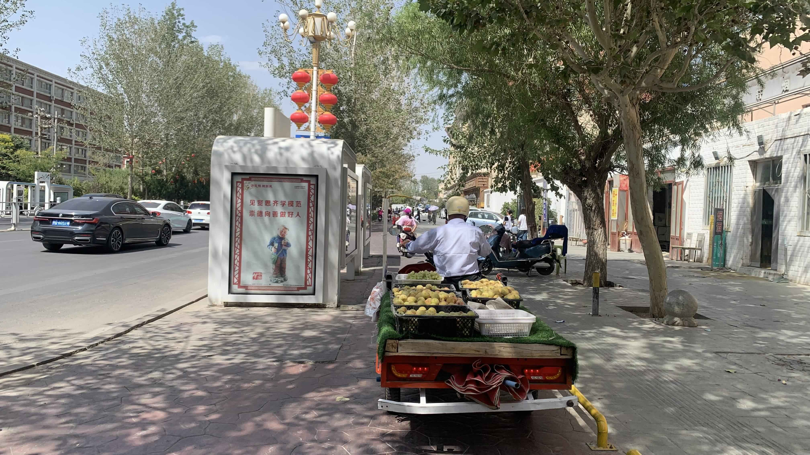
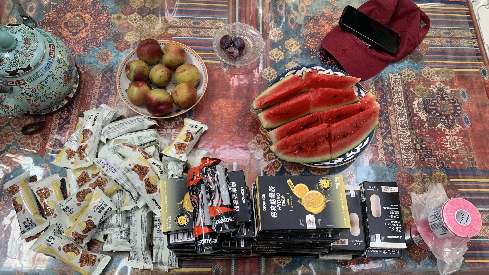
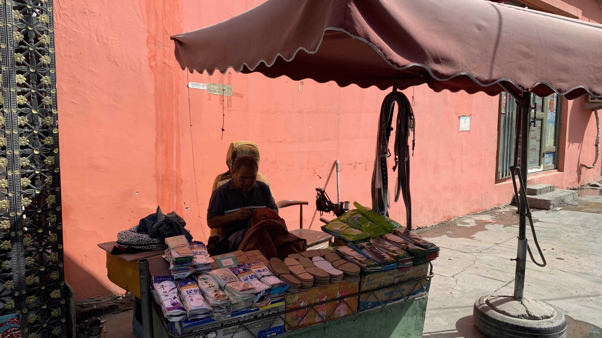
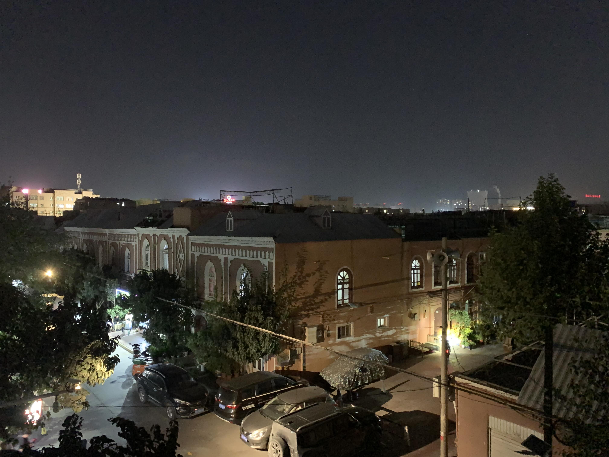
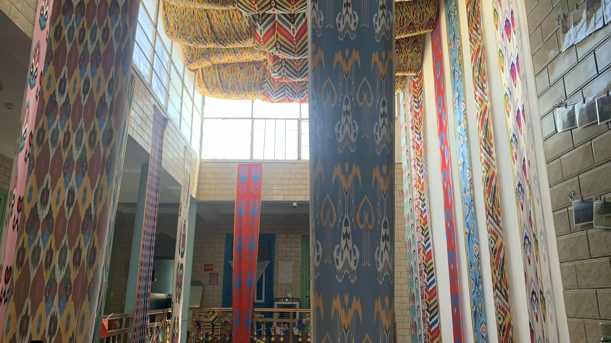
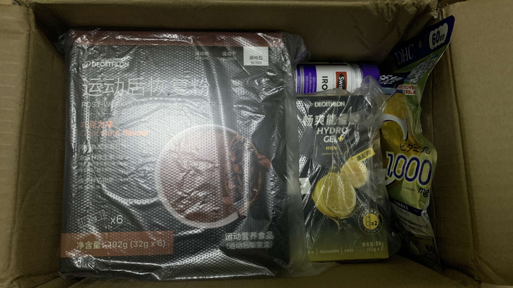

k-Day 167-173｜喀什（一）
躺在床上睡了三天，本週任務是完成進入中亞前的補給。

提前寄到青旅的包裹送到附近的菜鳥驛站，就這樣被丟在濕爛的地上。

路上有許多這樣的水果小貨車，車上都吊著一盞燈泡，看起來很像燈籠魚。

回到住處，老闆和客人正在分食西瓜和不知名水果，中間三顆據說叫做西梅，是伽師特產，產季就快結束了。吃起來沒有特別驚艷的感覺。
坐在我隔壁的是位克羅埃西亞車友Ante Predovic，從泰國一路騎經四川、西藏，中途飛到日本騎了一段，如今又回到新疆，正準備返鄉。
Ante已在喀什困了一週，只因旅行外胎被不明物割破，正等著廣東寄來的新胎。
兩人都沒啥事幹，我拆開剛領到的第一批包裹清點數量。
能量膠、穀物棒、鹽丸是硬性加購才能折價的。攤上桌後相當壯觀。
Ante笑著說：「我第一次看到包裹只有食物的。」
「要不你騎山路的時候都吃啥？」拆開桌上美團送來的滿滿一碗福建大餛飩，拿起湯匙好奇地看著他問道。
「花生醬、橄欖油補充脂肪，晚上煮義大利麵，或者乾燥食物包......」
「你這碗又是什麼？」
Ante也有自己的部落格，我點開第一篇配餛飩：「對中國的第一印象是城市街道很乾淨？？？！！！」看到這段話，瞬間回想起踏上大連港的第一天，還有在遼寧綿延不盡的垃圾帶。
「我從泰國過境，第一印象確實如此。日本也很乾淨，但是我覺得很無聊。我不知道為什麼，但是日本全都長得一樣。到了中國後我才感到震撼，西藏的山真的太壯觀了。」
在烏蘭巴托遇到的比利時小哥也說過類似的話，大概可以體會他們說的日本人不主動和他們交流，或者遇到嚴重歧視的狀況，但對於風景或城市很無聊這件事實在很難感同身受。
兩天後領到輪胎的Ante先我一步出發了。行前他把自己加入的全球自行車群組和好用的離線地圖app傳授給我。
「我們去的方向大致一樣，也許在路上某個地方還會遇到。」

拉鍊裂開的帳篷還得想辦法補救。青旅周邊有十幾家裁縫店，一間一間進門問，全都是做衣服的。大部分老闆不會說漢語，也沒有願意幫我處理拉鍊的。
隔天下樓，客廳坐了兩位青年男女，是來做衛生稽查的。
「你知道老闆的電話嗎？我們打了這上面的電話，一直找不到他。」稽查員指著牆上的民宿電話。
老闆就在樓上，大概率避不見面這件事我還是沒有說出來。因此無事可做的稽查員開始和我閒聊自行車和旅行，男稽查員看著牆上的地圖讓我指了路線，感嘆地說他以後也想全球旅行，但是這裡的風氣還是得工作賺錢結婚生子。女稽查員問我待會去哪，我說待會要找個地方換帳篷拉鍊呢，女性稽查員就和我說：「你去裁縫店，我剛在外面有看到，如果不行，就去修鞋的，我們小時候的制服都是這樣。」
遵循著稽查員的指示，加上路人指引，找到小區和主幹道交接處的一名修鞋師傅。
師傅和這小區年紀較長的人一樣，完全不會說漢語，旁邊另一攤的老闆用手機幫他按了個4元。修拉鍊四元的意思。
坐在攤子旁綁上地毯的長木椅，師傅修拉鍊的技巧純熟，鉗子夾了幾下、滴幾滴油，沒幾分鐘就修好了。
雖然手感還是很卡，總有預感大概撐不了多久又會爆開，至少撐到歐洲吧。

這天又來了一名從奧什搭車來的比利時大叔，以及一位南美洲的自行車旅人。
南美洲旅人因為老闆跟他換匯時要加收手續費，住了一晚就憤而離去。臨走前告誡我，若是在吉爾吉斯搭巴士，他們會想方設法讓你搭不上車，接著你只能等，或者接受私家車報價，必須把這些耗費的時間也算進去。塔吉克人不錯，你想在哪裡搭帳篷都沒沒人管你，但是貧窮國家會有的問題仍在那裡。
比利時大叔不是自行車族，更喜歡聊文化政治，因此很快地就談到比利時的移民問題、語言和國家認同，以及他對喀什的觀察。
「歐洲媒體一直告訴我們中國政府對維吾爾族做的事，說他們全都被殺了，喀什古城被摧毀。現在我親自到了這裡，看到他們都正常的生活著，古城也還在。你知道，西方媒體一直對我們說謊。我是研究語言學的，歐洲國家批評中國清除維吾爾文化和語言，但是法國自己以前也做過一樣的事，他們讓法國境內的方言和少數語言都消失了，以前法國並不只有一種語言。」
「我懂你意思了。你是說如果法國要批評中國，他們也應該先承認自己做過的事嗎？」我問。
「不，他們一直在說謊。他們說喀什古城全被破壞了，維吾爾人被屠殺，文化被消滅了。而我剛剛出去，親眼看到維吾爾人，他們很開心的生活在這裡，跟我打招呼......」
你知道國家沒必要「把整座城市摧毀」吧？他們也不需要殺光「所有人」。
「但不代表這裡什麼都沒有發生過。」我用句點的語氣說出這句話。心裡有些煩悶。
喀什讓我想起身為幼獸時期的高雄，那種原本說閩南語的長輩們艱難地發出「國語」標準音的笨拙姿態和對自己無法正確溝通感到失禮的低頭和眼神迴避；維族年輕人熱情地告訴我：「你知道我們這裡是全國愛滋病最嚴重的地方，以前伊斯蘭可以取很多老婆，太落後了，是現在政府禁止，我們現在治安都好多了......」；漢族年輕人笑著跟我介紹：「新疆很久一段時間只能上內網，我說的是其它省是翻牆才能看外網，我們是連外省的網都上不了，新疆是自己的網。」
還有那些路邊的大型維穩車輛和車上手持長槍的軍人......
「你知道台灣也曾經戒嚴吧，即便你在剛解嚴的那幾年到台灣旅遊，你也只會看到經濟起飛，大家都開心賺錢的台灣，但是不會有人特地告訴你台灣發生了什麼事。」我這樣和比利時大叔說。

比利時大叔和我在一次對話裡瞭解了各自立場後已經沒啥好聊。往後幾天，我都一個人佔據二樓房間外的角落，坐在榻上整理照片和日誌。
樓下大廳聊天的內容偶而會傳到耳裡：
「以後來你們這的外國人就用手機掃這個指紋......」
「他們進來時不都登記了嗎？這好麻煩我不幹，你這就是讓我們重複的事啊！」
大概是老闆和警察的談話。
「我就是想來這看看有什麼生意。」
「那你得先研究，我這裡好多客人都是去做生意，中國這家電還是做得好，他們那裡沒有這些......你車子賣過去給他們，他們買下會再用更高價賣出去......我這三年前開業的，今年遊客也少了，外國人還比國內的多。現在競爭激烈不好做，你看外面越開越多，以前維族人是不能做這個的。」
新來的住客是想到中亞經商的人，不愧是絲路古城呢。
「這個地圖上台灣和中國是一個顏色的？」比利時大叔拉了一名中國小伙問。
大概是沒能順利傳遞資訊，樓下的談話聲安靜了幾秒才又聽到大叔說：「台灣和中國是一個顏色，這地圖是假的？」
「Yes! Yes! Taiwan is China!」小伙回答。
「你認為台灣是中國的？不不不，台灣和中國是不同的。」大叔的語氣興味盎然。
「Taiwan is China.」小伙的英文拼不出另一句話。蒙古人的英文究竟如何訓練地如母語一般流利，也許中國教育部可以北上請益。

蛋白粉和另一批能量膠送到了。順便訂了一杯茶芭蕾藍莓酸奶和豬腳飯。
下樓拿外送時看了坐在長桌上的大叔和小伙一眼，對大叔露出意味深長的笑容。
「今天那外國人還問了我台灣的事呢」傍晚時分，小伙和老闆及另一名帶著廣東口音的中國住客在樓下聊天。
「那有什麼，台灣就是中國的。」住客說。
「我都和他們說，不要和外國人談政治......」老闆小聲說。
本週花費： 元